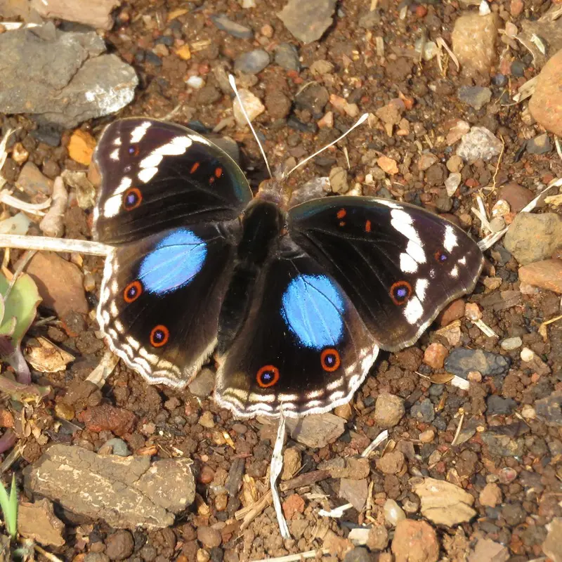
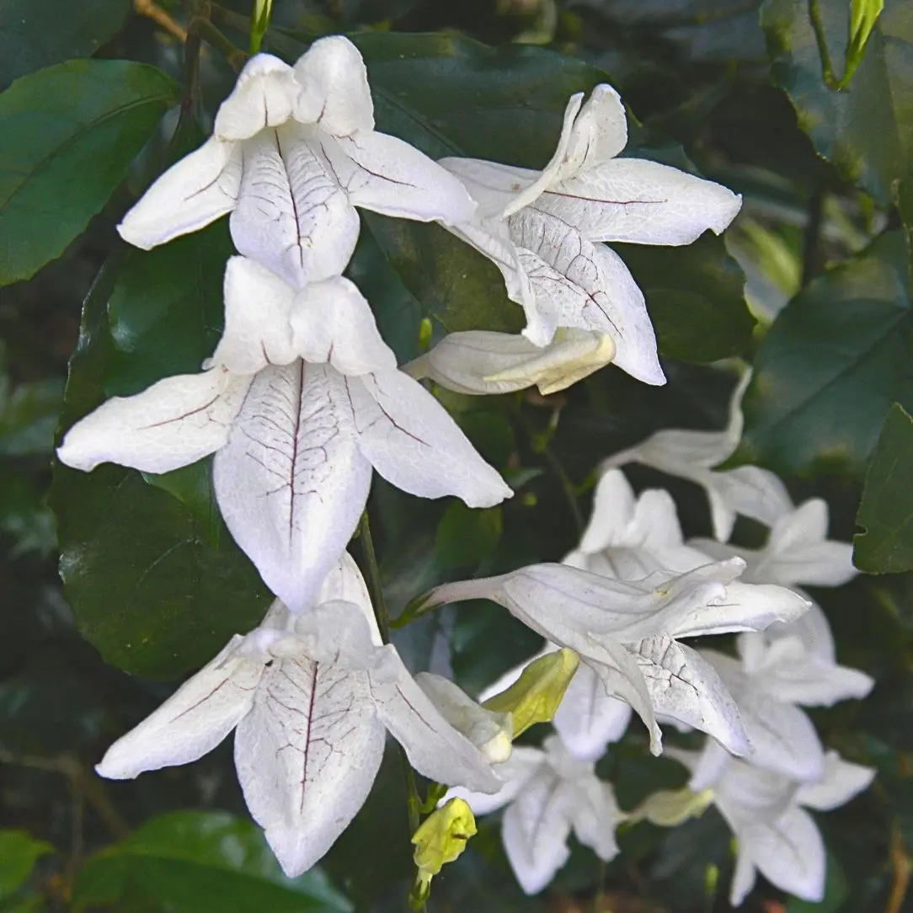
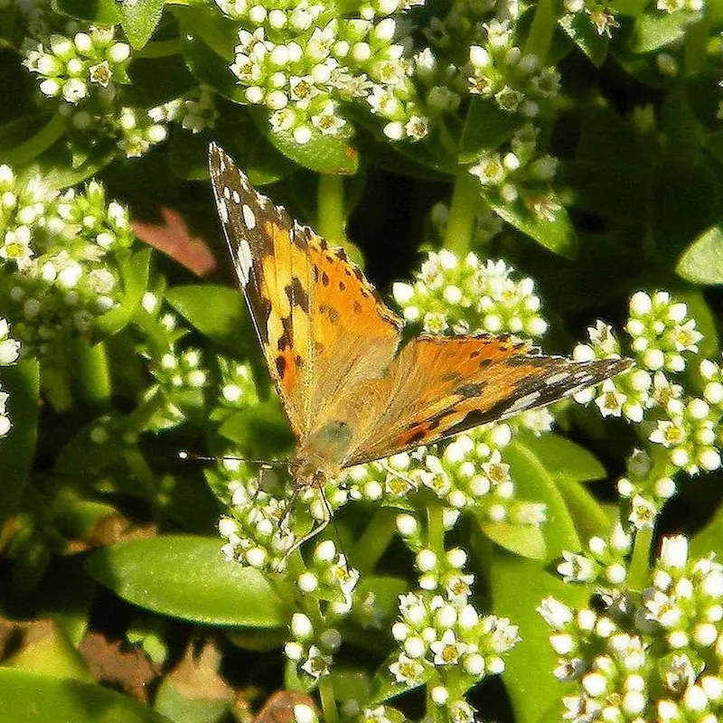

Dark Blue Pansy
Junonia oenone oenone

Dark Blue Pansy on a rock - By Anno Torr
The Dark Blue Pansy (Junonia oenone oenone) is a familiar butterfly of the Gillitts Conservancy area, where it favours sunny grassland edges, clearings, gardens, and bushy patches rather than deep shade. In places like the Minerva grasslands, adults are likely to be seen basking on open ground or visiting flowers. Adults feed on many different plants: African Coromandel, Asystasia intrusa, Bush Violet, Barleria obtusa, other Barleria species, Ribbon Bush, Hypoestes aristata, Justicia species, Butterfly Heaven, Dyschoriste depressa, and other Dyschoriste species. Its caterpillars feed on plants in the acanthus family, including Justicia, Mackaya, and Asystasia species, linking this butterfly closely to the mix of grassland and indigenous vegetation of Gillitts Conservancy.
- Adult nectar plants: Adults visit flowers of African Coromandel (Asystasia intrusa), Bush Violet (Barleria obtusa), Ribbon Bush (Hypoestes aristata), Justicia species, Butterfly Heaven (Dyschoriste depressa), and related acanthus flowers.
- Larval host plants: Caterpillars feed on members of the acanthus family, especially Justicia, Mackaya, Asystasia, and also related genera such as Isoglossa and Ruellia.
- Minerva and Gillitts link: This butterfly is well suited to the conservancy’s mix of open grassland, sunny edges, and indigenous understorey plants, where both adult food and caterpillar host plants can occur.

Acanthus-family plants support both adult and larval stages of the Dark Blue Pansy
Painted Lady
Vanessa cardui

Painted Lady - photo by Anno Torr
The Painted Lady (Vanessa cardui) is a familiar butterfly of the Gillitts Conservancy area, where it can be seen in sunny grassland, gardens, roadsides, and other flower-rich open spaces. In places like the Minerva grasslands, it is attracted to nectar flowers, especially where natural grassland and edge habitat are still intact. Its caterpillars feed on a wide range of plants, particularly in the daisy family, making it well suited to a variety of habitats. It is also a migratory species, so numbers may vary from season to season.
- Adult nectar plants: Adults feed from many open flowers, especially thistles and other daisy-family blooms, and are also often seen on buddleia, lavender, and similar nectar-rich garden flowers.
- Larval host plants: Caterpillars use a wide range of host plants, especially members of the daisy family such as thistles, cudweeds, and other composite flowers.
- Minerva and Gillitts link: Because it can use many nectar and host plants, the Painted Lady does well in the conservancy’s grassland edges, gardens, roadsides, and other sunny flower-rich patches.

Thistles and other daisy flowers are important food sources for Painted Ladies